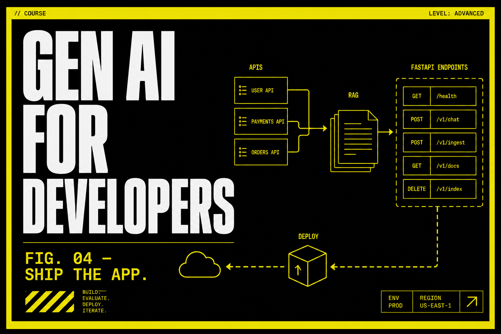

Gen AI for Developers
Three months, live, for people who already write software. You build RAG search, tool-using agents, FastAPI services, a thin UI, and a capstone you can explain. This is not analyst training and not MLOps.

Program fee
One-time payment
One-time payment for 3 months live ILT with capstone and certificate.
Payment options
- No hidden charges. Batch timings confirmed on call.
What you learn
Who it is for
Career support
Course Curriculum
Module 1: LLM APIs and SDKs
Foundations for GenAI applications
You already write software. This module is calling models like any other API: auth, retries, schemas, and prompts that fail closed.
API and SDK integration
- Keys, environments, and never committing secrets
- Timeouts, retries, idempotency for paid calls
- Streaming vs batch — pick one for the UX
Prompt patterns
- System vs user vs tool messages
- Few-shot that does not rot
- When a longer prompt is just a more expensive bug
Structured outputs
- JSON schemas, function-calling style args
- Validate before you write to a database
- Repair loops that do not infinite-spend
Cost and safety at the edge
- Token budgets in the client
- PII you should not send
- A log line you could show in an incident
You leave with a small client library: typed calls, retries, and a schema the rest of the app can trust.
Module 2: App packaging
Foundations for GenAI applications
A notebook is not a product. You wrap the model behind FastAPI and put a thin UI in front so a human can try it without your laptop.
FastAPI services
- Routes, pydantic models, dependency-injected clients
- Health checks and version headers
- Errors that are JSON, not a stack trace in the browser
Streamlit and Gradio UIs
- A demo that does not pretend to be the product
- Session state, file upload, and a clear ‘this is a prototype’
- When to stop and move logic back to the API
Failure handling
- Provider outages, rate limits, empty retrieval
- User-visible copy that does not leak internals
- Retry buttons that do not double-submit
Local runbooks
- README: how to run, what env vars, what it costs
- Docker optional but encouraged
- No Excel, no Power BI — this is an app slab
You leave with API + UI running locally, documented env vars, and a failure path you tested.
Module 3: RAG pipelines
RAG and agents
Most ‘chat with my PDFs’ demos lie. You will chunk, embed, retrieve, and score answers against a tiny golden set.
Chunking and embeddings
- Chunk size vs question type
- Metadata filters (source, date, ACL-shaped tags)
- Re-embed when the corpus moves
Grounded retrieval
- Top-k, rerank if you need it
- Citations the UI can show
- Abstain when retrieval is junk
Evaluation of answers
- Faithfulness vs relevance vs answer quality
- A 20-row golden set beats a vibe check
- Regressions: a prompt change that drops groundedness
Known failure modes
- Stale docs, duplicate chunks, table-as-text mush
- Jailbreaks that ignore your corpus
- What this module will not do: train a new base model
You leave with a RAG pipeline and a golden-set score you can quote without blushing.
Module 4: Agent workflows
RAG and agents
Tool-using agents are useful when the tool list is short and audited. You will build one that can call functions, remember a little, and stop.
Tool calling
- Allowlists, argument schemas, dry-run logs
- Idempotent tools vs ‘send email’ disasters
- Timeouts per tool
Memory
- What belongs in the thread vs a store
- Summaries that drop the important constraint
- GDPR-shaped: do not keep secrets in traces
Multi-step orchestration
- A graph or loop with a max-step cap
- Human confirm on irreversible actions
- LangGraph-class thinking without cargo-culting a vendor
Eval for agents
- Did it call the right tool?
- Did it loop?
- A trace you can paste into a review
You leave with a bounded agent: two tools, a step cap, and a trace of a successful and a failed run.
Module 5: Ship the capstone
Production
The capstone is a deployed demo you can explain: RAG or agent, an API, a UI, traces, and a paragraph on cost.
Production deployment
- A host you can hit from a phone
- Env-based config, no keys in the frontend
- A version string in the UI
Tracing and docs
- LangSmith/Langfuse-style traces or equivalent logs
- README + architecture sketch
- A 3-minute walkthrough script
Portfolio review
- What you would not ship to a bank tomorrow
- Load and cost: one realistic number
- Career-call defense: decisions, not a feature tour
Boundaries
- Not MLOps-for-tabular
- Not Power BI
- Not a fake CTC
You leave with a live URL (or a recorded deploy), traces, and a one-page architecture note.
Frequently asked questions
Do I need a data-science background?
You need to already write software. This is APIs, RAG, and agents — not Excel or Power BI.
What is the fee and duration?
₹40,000, one-time, for 3 months live.
How is this different from Gen AI Specialization?
This slab ships apps. Specialization goes into model internals, fine-tuning, and multimodal systems.
Ready to start?
Talk to Prerna about this program — 15 minutes, no sales pitch.